순위는 '이번 주에 받은 별'로 매겨요
영상은 깃허브 트렌딩 페이지의 '이번 주(This week)' 기준으로 순위를 매겨요. 아래는 영상 끝에 다시 띄운 트렌딩 화면이에요. 맨 위 cloudflare/security-audit-skill 오른쪽 아래에 '이번 주 받은 별' 숫자가 따로 붙어 있어요.
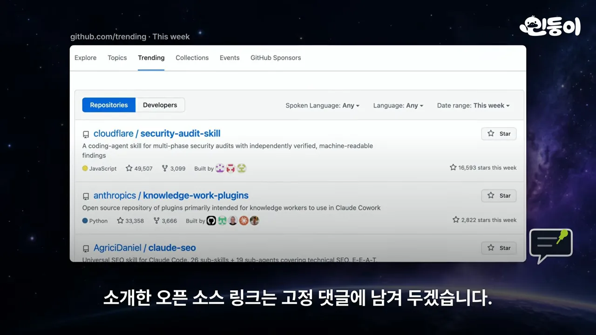
그래서 누적 별 수로 다시 줄 세우면 순위와 전혀 달라요. 영상이 읽어 준 누적 별 수를 같은 눈금에 그려 봤어요. 4위 카파시 스킬과 8위 오픈코드가 22만 개를 넘는데, 1위는 5만 개도 안 돼요.
열 개를 한 줄씩 정리하면 이래요. 공통점은 대부분 새 AI를 만드는 게 아니라, 클로드 코드나 코덱스 같은 기존 코딩 에이전트에 무언가를 덧붙인다는 점이에요.
| 순위 | 이름 | 무엇인가요 | 형태 |
|---|---|---|---|
| 10 | 안드로이드 스킬 | AI가 자주 틀리는 안드로이드 작업의 공식 순서 | 스킬 36개 |
| 9 | 오르카 | 터미널·편집기·브라우저를 모은 에이전트용 앱 | 데스크톱 앱 |
| 8 | 오픈코드 | 오픈소스 AI 코딩 에이전트 | 터미널·데스크톱 앱 |
| 7 | 루플로 | 에이전트 팀을 꾸려 일을 나누는 지휘 도구 | 클로드 코드·코덱스 위에 얹음 |
| 6 | 그래피파이 | 프로젝트 전체를 연결 지도로 엮음 | 20개 넘는 도구에서 사용 |
| 5 | 트레이딩 에이전츠 | 투자 회사처럼 역할을 나눈 종목 분석 | 연구용 프로그램 |
| 4 | 카파시 스킬 | AI 코딩 습관을 바로잡는 원칙 네 가지 | CLAUDE.md 한 장 |
| 3 | 클로드 SEO | 주소 하나로 검색 노출 점검 | 클로드 코드 플러그인 |
| 2 | 지식 노동 플러그인 | 클로드를 직무별 전문가로 | 앤트로픽 플러그인 모음 |
| 1 | Cloudflare 보안 감사 스킬 | 에이전트끼리 서로 검증하는 보안 감사 | 스킬 |
10~8위: 에이전트가 일하는 환경을 바꾸는 도구
10위 안드로이드 스킬 — AI가 낡은 코드를 짜는 문제
AI는 학습한 시점의 지식으로 코드를 짜요. 안드로이드는 해마다 바뀌니까 이미 지난 방식으로 짜는 일이 잦아요. 구글 안드로이드 팀은 그래서 모든 작업을 다루지 않고, 평가해 보니 AI가 약했던 작업만 골랐어요. 아래 README 문장이 바로 그 선택 기준이에요. 'LLM이 이미 잘하는 Jetpack Compose 기본기 같은 건 우선순위에 두지 않는다'고 적혀 있어요.

그렇게 고른 작업의 공식 순서를 36개 스킬로 정리했어요. 화면 하나에 네 갈래가 그려져 있어요. 왼쪽 두 개(화면 구성, 앱 용량)는 자주 하는 작업이고, 오른쪽 두 개(워치, TV(Television))는 다른 기기용 앱 지침이에요.
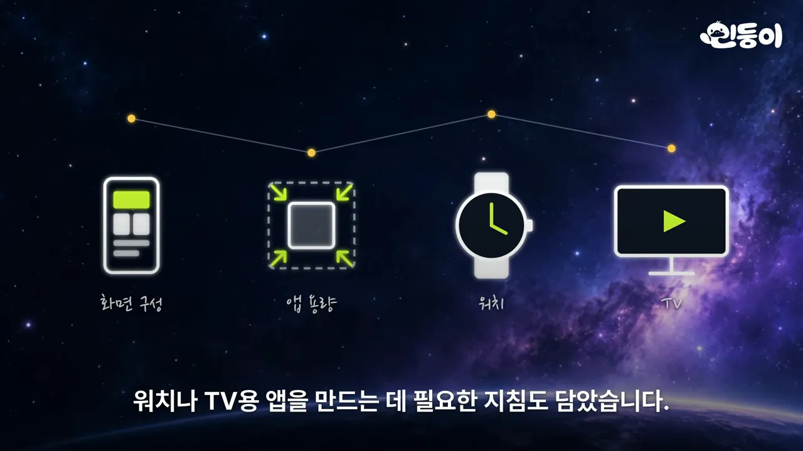
9위 오르카 — 창 여러 개를 앱 하나로
코딩 에이전트를 쓰면 터미널, 코드 편집기, 브라우저를 계속 오가게 돼요. 오르카는 이걸 데스크톱 앱 하나에 모았어요. 아래 README 캡처의 'Drag Files to Agents' 항목처럼, 안에 VS Code 편집기가 들어 있어서 파일을 바로 고치거나 파일·이미지를 에이전트 입력창에 끌어다 놓을 수 있어요.
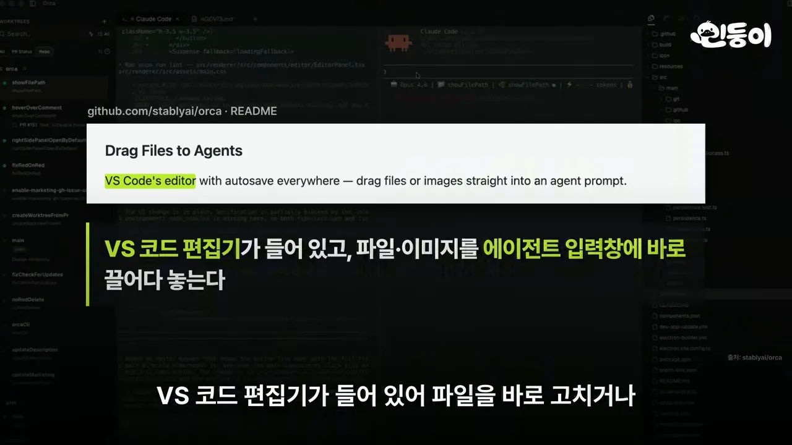
앱 안 브라우저에서 화면의 버튼 하나를 누르면 그 부분 코드와 캡처가 에이전트에게 바로 가요. 에이전트가 고친 코드에는 줄마다 코멘트를 달아 돌려보낼 수 있어요. 아래 휴대폰 화면은 'Account Usage' 칸에 클로드와 코덱스 계정 두 개의 남은 사용량을 따로 보여 줘요.

8위 오픈코드 — 오픈소스 코딩 에이전트
오픈코드는 클로드 코드 같은 AI 코딩 에이전트를 오픈소스로 만든 거예요. 홈페이지 문구의 노란 부분처럼 75곳이 넘는 모델 회사와 로컬 모델 중에서 골라 쓸 수 있어요. ChatGPT Plus·Pro나 GitHub Copilot 구독으로 로그인해도 돼요.

구독이 없어도 계정 없이 쓰는 무료 모델이 들어 있어요. 영상 시점에는 DeepSeek V4.1 Flash와 GLM(General Language Model)을 기간 한정으로 무료로 쓸 수 있었어요. 아래는 영상이 '오늘 나왔다'고 소개한 v2.2.0 릴리스 노트예요. Highlights 첫 줄이 '데스크톱 플러그인을 만들고, 설치하고, 공유하기(실험 기능)'예요.
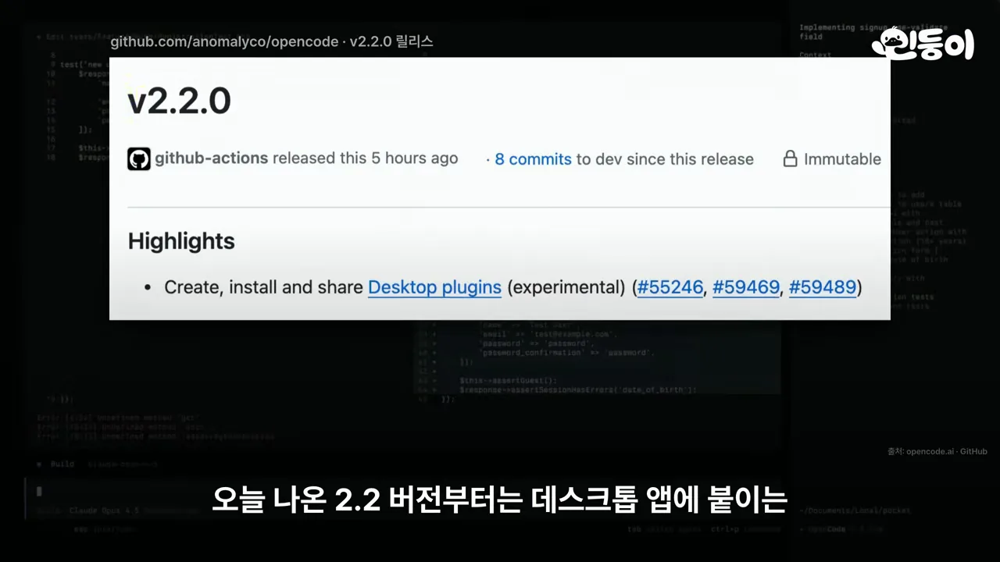
7~5위: AI에게 팀과 지도를 붙여 주는 도구
7위 루플로 — 에이전트로 팀 꾸리기
루플로는 클로드 코드와 코덱스 위에 얹어 쓰는 에이전트 지휘 도구예요. README 첫 줄의 공식이 개념을 요약해요. '에이전트 = 모델 + 하네스'이고, 루플로가 그 하네스, 즉 클로드 코드와 코덱스를 감싸는 실행 층이라는 거예요.
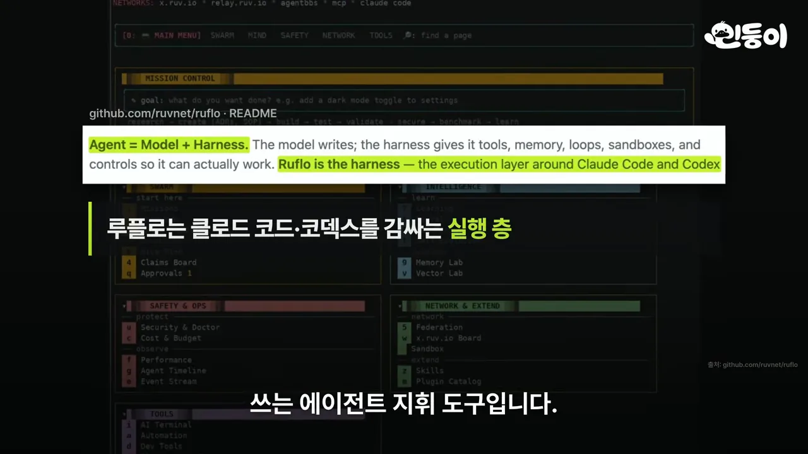
큰 일을 AI 하나에 통째로 맡기는 대신, 코딩·테스트·보안·문서를 맡은 에이전트들로 팀을 꾸려 나눠 처리해요. 지난 작업에서 배운 걸 기억해 뒀다가 다음 작업에 꺼내 쓰고, 팀이 뭘 하는지와 토큰·비용은 대시보드로 한눈에 봐요. 아래 릴리스 목록은 이번 주 이틀 동안 나온 v3.63.0~v3.63.4예요. v3.63.3 옆에 'security fi…'가 보여요.

6위 그래피파이 — AI에게 프로젝트 지도를 주기
AI에게 큰 프로젝트를 맡기면 파일을 하나씩 열어 보느라 시간도 토큰도 많이 들어요. 그래피파이는 코드, 문서, PDF(Portable Document Format), 이미지, 영상까지 프로젝트 전체를 연결 지도 하나로 엮어 둬요. AI는 파일을 뒤지는 대신 이 지도에서 필요한 연결만 찾아 답해요. 아래 README 문장의 노란 부분이 '아무것도 내 컴퓨터 밖으로 나가지 않는다'예요.
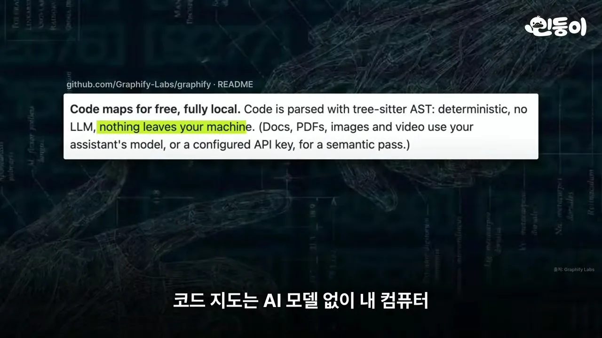
효과는 숫자로 나왔어요. 만든 쪽이 100만 줄짜리 프로젝트(ERPNext)에 질문 여섯 개를 던졌어요. 회색 막대가 파일을 직접 뒤졌을 때, 초록 막대가 그래피파이를 썼을 때 핵심 사실을 찾아낸 비율이에요.

5위 트레이딩 에이전츠 — AI 투자 회사
트레이딩 에이전츠는 여러 AI가 실제 투자 회사처럼 역할을 나눠 종목을 분석해요. 영상이 말로 설명한 순서를 한 장에 그리면 이래요. 분석가 네 명이 먼저 보고서를 내고, 그다음 두 연구원이 정반대 입장에서 토론해요.
flowchart LR
A1["재무제표 분석가"] --> R
A2["뉴스 분석가"] --> R
A3["커뮤니티 반응 분석가"] --> R
A4["차트 분석가"] --> R
R{"오른다 쪽 vs 떨어진다 쪽 연구원 토론"} --> T["트레이더"] --> M["위험 관리 팀"] --> D["최종 결정"]
D -. "실제 수익률과 비교" .-> A1
README의 구조도 일부를 보면 오른쪽 위 Manager, 왼쪽 Trader, 아래 큰 Execution 버튼이 있어요. 왼쪽 아래 Team 상자에 분석가·연구원·트레이더·위험 관리 팀의 역할이 한 줄씩 적혀 있어요.
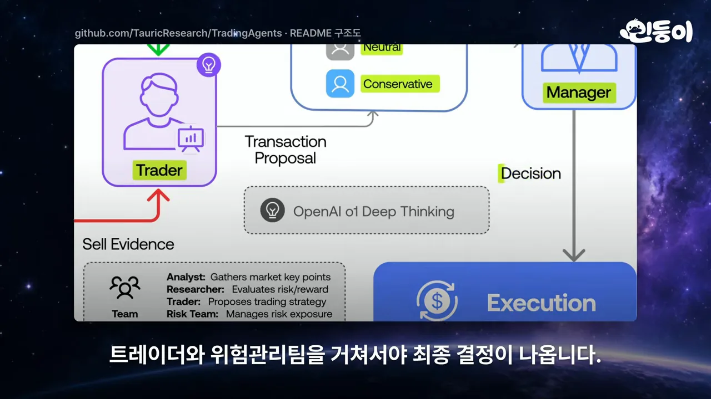
미국은 물론 홍콩, 도쿄, 중국 주식과 비트코인까지 분석하고, DeepSeek나 로컬 모델처럼 원하는 모델을 골라 써요. 최근엔 ChatGPT Plus·Pro 구독만으로도 돌릴 수 있게 됐어요. 그래도 아래 README의 노란 부분처럼 프로젝트 스스로 '연구용으로 설계했다'고 밝혀요.
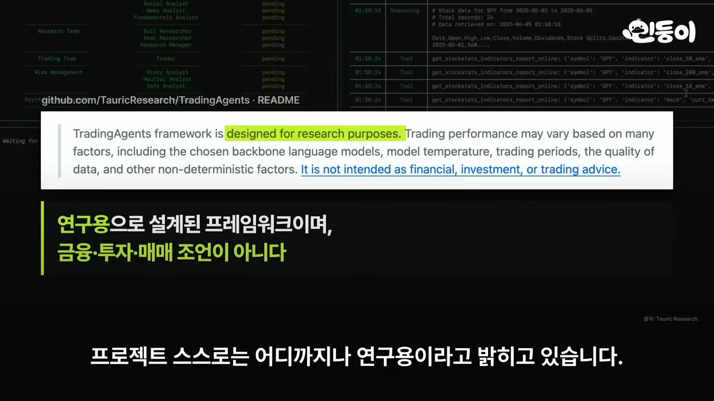
4~3위: 파일 한 장, 플러그인 하나
4위 카파시 스킬 — 파일 한 장의 힘
별이 22만 개가 넘는데 열어 보면 파일 한 장뿐이에요. 클로드 코드가 일을 시작하기 전에 읽는 설정 파일 CLAUDE.md예요. 출발은 안드레 카파시가 X에 올린 글이에요. 아래 화면은 그 글을 인용한 README 부분인데, 노란 부분이 '모델이 잘 모르는 코드와 주석을, 작업과 상관없어도 바꾸거나 지운다'는 지적이에요.
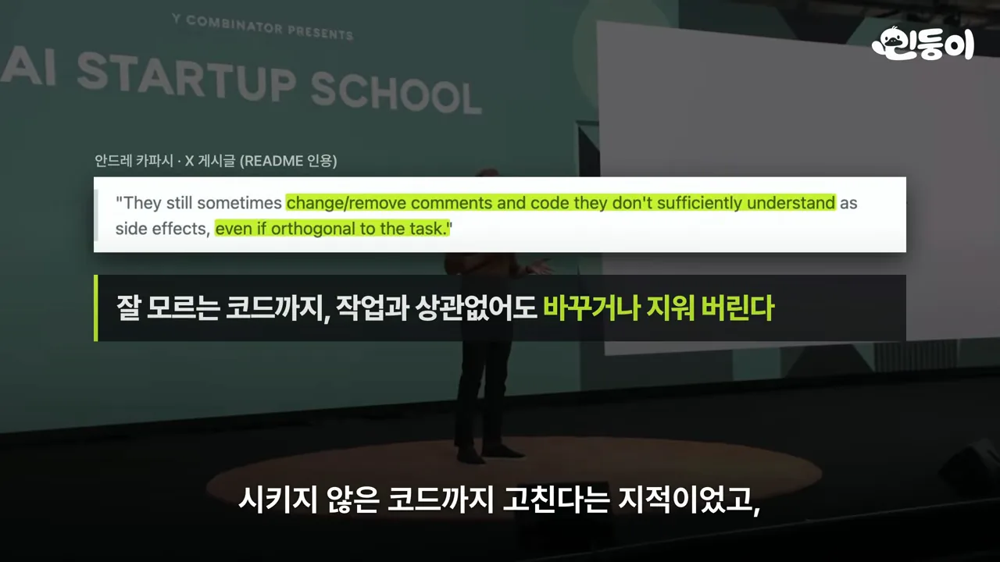
파일은 이 문제를 원칙 네 가지로 막아요. 영상이 말한 원칙과, 각각이 막는 문제를 짝지으면 이래요.
| 원칙 | 막으려는 문제 |
|---|---|
| 짜기 전에 먼저 묻기 | AI가 멋대로 짐작하고 그대로 밀고 나감 |
| 단순하게 짜기 | 100줄이면 될 코드를 1,000줄로 짬 |
| 요청한 곳만 고치기 | 시키지 않은 코드까지 고침 |
| 끝났는지 확인할 기준부터 정하기 | 확인 없이 끝났다고 함 |
저장소 안을 보면 파일 구성이 단순해요. 노란 표시가 붙은 세 개가 영상이 짚은 부분이에요. .claude-plugin은 클로드 코드 플러그인, .cursor/rules는 커서 규칙, CURSOR.md는 커서용 안내예요.

3위 클로드 SEO — 주소 하나로 검색 점검
클로드 SEO는 내 사이트가 검색에 잘 걸리는지 주소 하나로 점검하는 클로드 코드용 무료 플러그인이에요. 저장소 소개 문구에 구성이 그대로 나와요. 하위 스킬 26개와 하위 에이전트 19개가 기술 SEO, E-E-A-T, 스키마, GEO(Generative Engine Optimization)/AEO까지 나눠 맡아요.
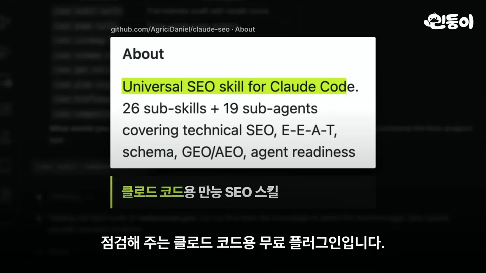
에이전트들은 속도, 구조, 콘텐츠 신뢰도를 보고, 요즘 중요해진 ChatGPT나 Perplexity 같은 AI 검색에 내 글이 인용되기 쉬운지도 따져요. 10~15분이면 무엇부터 고칠지 순서대로 정리한 보고서가 나오고, API(Application Programming Interface) 키를 따로 받을 필요도 없어요. 아래는 만든 사람이 README에 공개한 결과예요. 노란 부분이 '첫 12주 만에 Search Console 클릭 10.8K'예요.
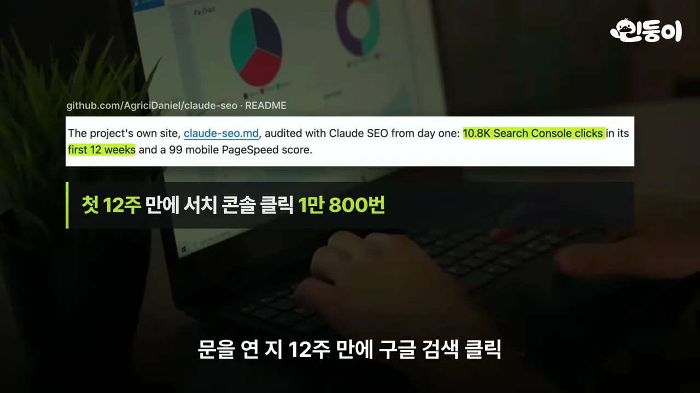
2~1위: 직무 전문가와 보안 감사관
2위 지식 노동 플러그인 — 클로드를 직무 전문가로
앤트로픽이 직접 만든 플러그인 모음이에요. 클로드를 영업, 재무, 법무, 마케팅 같은 직무별 전문가로 바꿔 주고, Claude Cowork와 클로드 코드에서 모두 써요. README 표의 왼쪽 칸이 플러그인 이름(sales, finance, legal, marketing)이고, 오른쪽이 각각 맡는 일이에요.
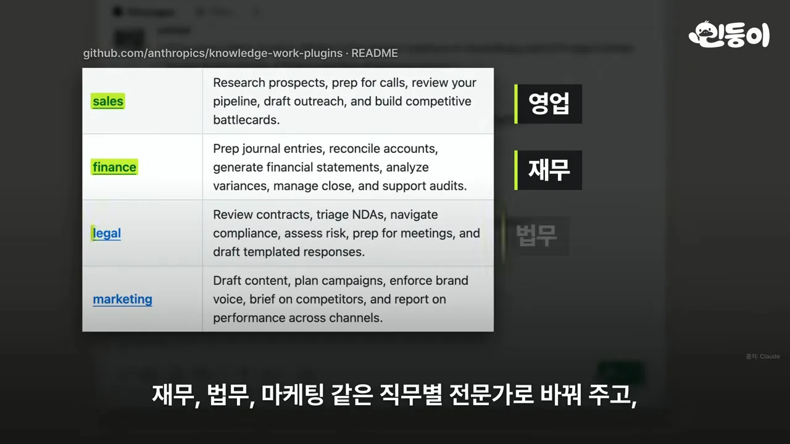
영업 플러그인은 고객 관리 도구, 메일, 통화 기록을 모아 미팅 준비 자료를 만들어요. 이번 주 업데이트로 문장마다 출처 링크까지 붙어요. 소상공인 플러그인은 밀린 대금 독촉부터 현금 흐름 예측까지 맡아요. 다만 아래 README 문장처럼 모든 스킬이 실행 직전에 멈춰요. '내가 허락하지 않으면 아무것도 보내거나, 올리거나, 결제하지 않는다'고 적혀 있어요.
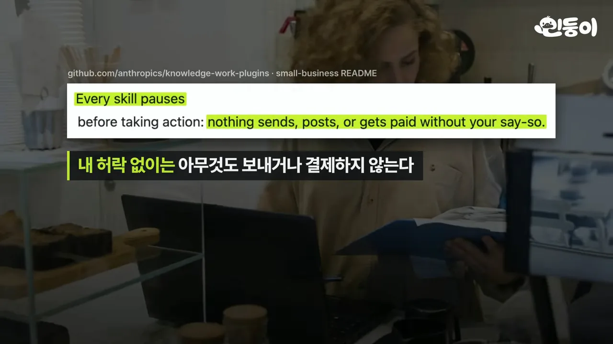
외부 회사가 만든 것까지 합치면 120개가 넘어요. 모두 코드 없이 마크다운과 JSON(JavaScript Object Notation) 문서로만 되어 있어서 내 방식대로 고쳐 쓰기 쉬워요.
1위 Cloudflare 보안 감사 스킬 — 에이전트끼리 서로 반박하기
1위는 누적 별 4만 9천 개로 열 개 중 적은 편이지만, 이번 주에만 1만 6천 개를 받았어요. 아래 막대에서 왼쪽 1위 막대가 오른쪽 2위 막대보다 다섯 배 넘게 높아요.
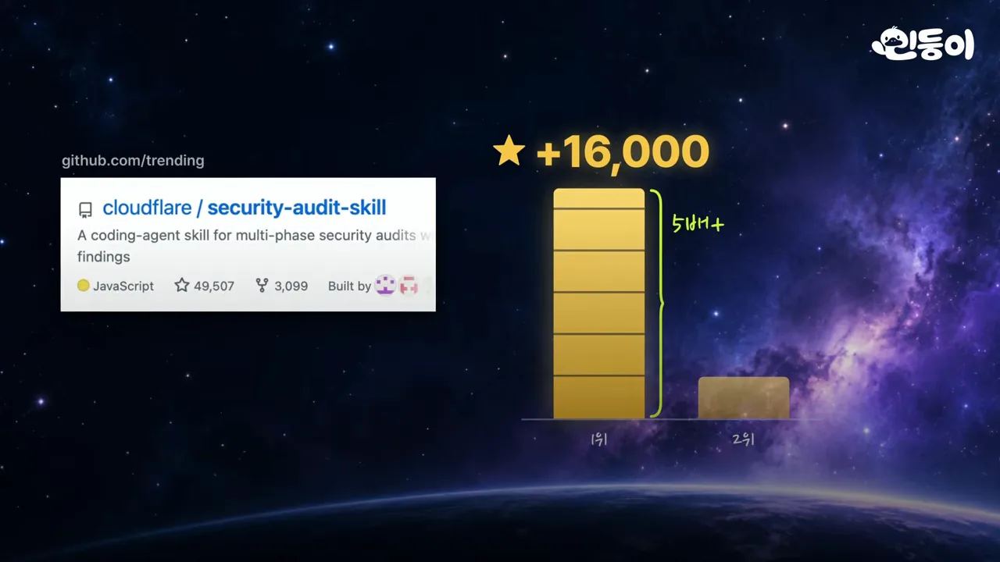
이 스킬은 AI 코딩 에이전트를 보안 감사 담당으로 바꿔요. 여러 에이전트가 구역을 나눠 취약점을 찾는 데서 끝나지 않아요. README의 설계 원칙 첫 줄이 핵심이에요. '발견을 검증하는 에이전트는 절대 그걸 찾은 에이전트가 아니다.'
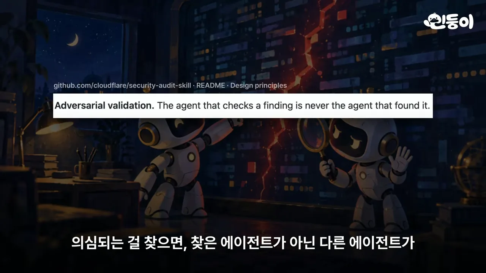
살펴보는 범위는 메모리 오류부터 로그인 우회, 프롬프트 인젝션, 클라우드 설정 실수까지예요. 코드를 직접 돌려 봐야 할 때는 아래 README 요구 사항처럼 외부 네트워크를 끊은, OS(Operating System)가 지키는 격리 공간에서만 돌려요.
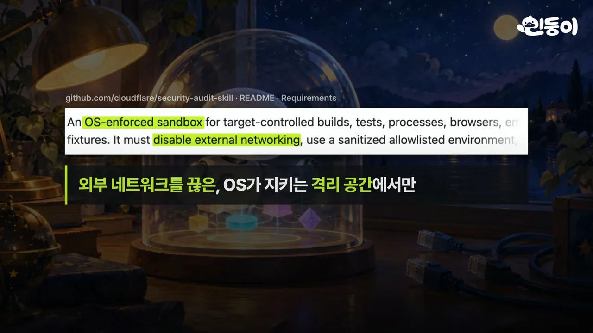
영상이 설명한 흐름을 한 장으로 이으면 이래요. 마지막 보고서는 확인된 것과 더 확인할 것을 나눠 담아요.
flowchart LR A["여러 에이전트가 구역 나눠 탐색"] --> B["의심 지점 발견"] B --> C["다른 에이전트가 반박하며 검증"] C -- "직접 실행이 필요할 때" --> S["인터넷이 막힌 격리 공간에서 실행"] S --> C C --> R1["보고서: 확인된 것"] C --> R2["보고서: 더 확인할 것"]
영상은 이번 주에 AI에게 일을 맡기는 방식을 다듬는 도구들이 특히 많이 올라왔다고 정리하며 끝나요.